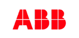
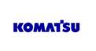
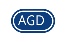
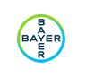
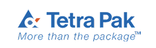
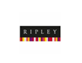
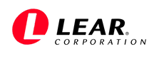
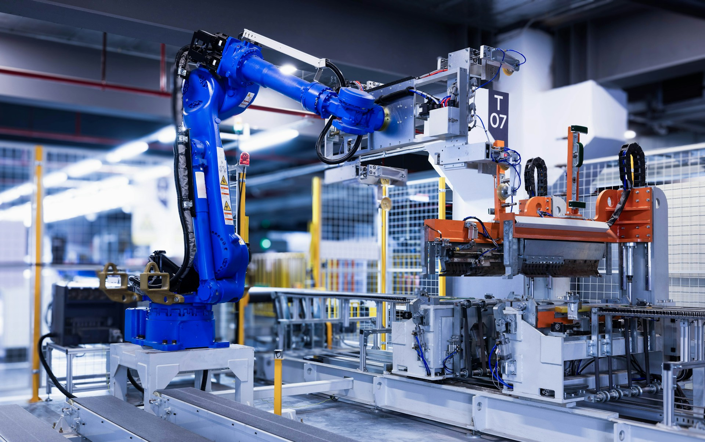
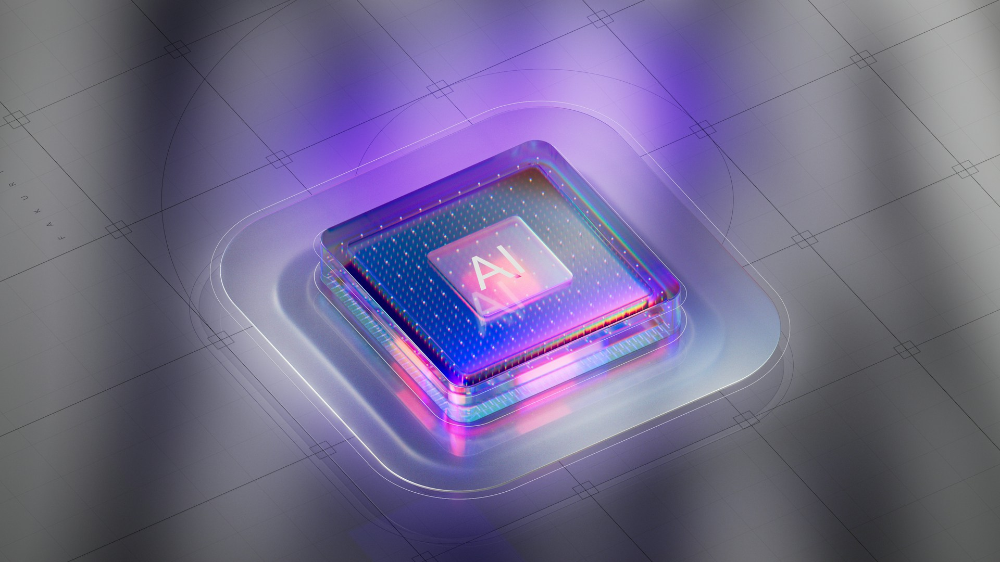

IT + Innovation Logistics
Más de 20 años transformando la logística y las operaciones empresariales a través del desarrollo de software a medida e integraciones de alto rendimiento.
Time Solution Software nació en 2003 con una visión clara: desarrollar soluciones tecnológicas a medida que resolvieran los desafíos reales de las empresas, especialmente en el ámbito de la logística y las operaciones. Desde nuestros inicios, apostamos por la especialización profunda en lugar de ofrecer soluciones genéricas, lo que nos permitió construir una reputación sólida basada en resultados concretos y medibles.
A lo largo de más de dos décadas, hemos perfeccionado nuestra metodología de desarrollo, integrando las mejores prácticas internacionales con un conocimiento exhaustivo de las particularidades del mercado latinoamericano y europeo. Nuestro equipo está formado por profesionales altamente cualificados, muchos de ellos con certificaciones internacionales en sistemas de automatización y gestión de almacenes (WMS).
Hoy, Time Solution es un referente indiscutible en el desarrollo de software para logística, con una cartera de clientes que incluye algunas de las empresas más importantes a nivel global. Nuestra filosofía es simple: entender el negocio del cliente, diseñar la solución óptima e implementarla con excelencia técnica.
Especialistas en desarrollo de software a medida con foco en integraciones logísticas, automatismos y robótica industrial.
Entendemos cada proceso antes de programar una sola línea de código.
Soluciones 100% personalizadas para cada cliente.
Conectamos sistemas, máquinas y personas en un único ecosistema.
La combinación de experiencia acumulada, certificaciones internacionales y un equipo apasionado nos permite ofrecer soluciones en tres grandes áreas que marcan la diferencia en la operación diaria de nuestros clientes.
Diseñamos y desarrollamos aplicaciones empresariales adaptadas exactamente a los procesos, flujos y necesidades de cada organización. Sin funcionalidades innecesarias, sin compromisos en los requisitos críticos del negocio.
Somos especialistas en la integración de sistemas WMS con todo tipo de automatismos industriales: robots de picking, sorters, transelevadores, AGVs y cintas transportadoras. Conectamos la tecnología física con la inteligencia del software.
Conectamos ERPs, TMSs, WMSs, plataformas de e-commerce y sistemas de terceros para crear cadenas de suministro completamente integradas, eliminando silos de información y procesos manuales ineficientes.
Hoy, las soluciones de Time Solution están operando en 8 países, desde América Latina hasta Europa, gestionando operaciones logísticas críticas de empresas líderes en sus respectivos sectores. Esta expansión geográfica es el resultado de años de trabajo riguroso, relaciones de confianza con nuestros clientes y la capacidad de adaptarnos a distintos marcos regulatorios y culturales
País de origen y sede central de operaciones.
Mercado consolidado con clientes de primer nivel.
Implementaciones activas en logística y distribución.
Soluciones en cadena de suministro y almacenes.
Presencia en operadores logísticos clave.
Crecimiento sostenido en el mercado local.
Referencia europea en WMS y automatización.
Expansión activa en el mercado ibérico.
A lo largo de más de dos décadas, hemos tenido el privilegio de trabajar junto a empresas líderes en sus industrias. Desde multinacionales de primer nivel hasta operadores logísticos especializados, nuestros clientes representan la diversidad de sectores donde nuestra tecnología genera impacto real: aviación, automotriz, alimentación, farmacéutica, minería, retail y mucho más.







Alianzas estratégicas con líderes mundiales en automatización, robótica y logística.
Italia | Almacenes verticales automatizados
Estonia | Robótica para entrega de paquetes
Argentina & Perú | Integración de sistemas logísticos
Chile | Automatización industrial y tecnología
Chile | Maquinaria y equipamiento logístico
España | Sistemas de picking guiado por luz
Japón | Robótica industrial y motion control
La verdadera diferenciación de Time Solution reside en nuestra capacidad para integrar software de gestión con el mundo físico de la automatización industrial. Esta es, sin duda, nuestra área de mayor especialización y donde hemos obtenido los resultados más destacados para nuestros clientes.
Nuestra experiencia abarca la integración con robots de picking y paletizado, sistemas de transporte automatizado (AGVs y AMRs), sorters de alta velocidad, transelevadores automáticos, carruseles, conveyors, smart lockers y sistemas de almacenamiento vertical.
En todos los casos, el objetivo es el mismo: que el sistema WMS y los automatismos físicos hablen un único lenguaje , eliminando errores, acelerando operaciones y maximizando la capacidad instalada.
Los resultados que obtienen nuestros clientes son consistentemente notables: reducción drástica de errores operativos, aumento de la velocidad de picking, visibilidad en tiempo real del estado de cada automatismo y trazabilidad completa de cada unidad de carga a lo largo de toda la instalación

Tasa de exactitud en operaciones con automatismos integrados.
Desarrollando soluciones de alto rendimiento para logística.
Con soluciones en producción y equipos de soporte local.
De todos los sectores confían en nuestras integraciones.

Nuestros sistemas incluyen un módulo de IA nativo para consultar información operativa en lenguaje natural, sin conocimientos técnicos.
Analice qué productos rotan más.
Compare ventas y rentabilidad al instante.
Reciba recomendaciones de ubicación óptima.
Anticipe quiebres y retrasos.
Genere informes ejecutivos al instante.
El éxito de cada proyecto de Time Solution está sustentado en una metodología probada y perfeccionada a lo largo de más de dos décadas. Cada etapa tiene un propósito claro y genera entregables concretos que aseguran que el cliente siempre sepa en qué punto está su proyecto y qué viene a continuación
A lo largo de nuestra trayectoria, Time Solution y su equipo directivo han sido reconocidos por organismos nacionales e internacionales por la innovación, el crecimiento y la excelencia técnica de nuestras soluciones. Estos reconocimientos son el reflejo del compromiso permanente con la calidad y la innovación.
Reconocimiento temprano que validó el potencial innovador de nuestro enfoque tecnológico en el comercio exterior.
Primer subsidio no reembolsable otorgado por la Agencia Nacional de Promoción Científica y Tecnológica, Decreto 095/13.
Segundo reconocimiento consecutivo por parte del organismo científico nacional, Decreto 034/15, que consolidó nuestra posición como empresa innovadora.
Diego Fernando Tisman obtiene la certificación como especialista en sistemas WMS y automatización de almacenes en industria robótica, emitida en Italia.
Time Solution es seleccionada para integrar la delegación argentina en la misión comercial tecnológica a Atlanta y Chicago, con sede en la Universidad de Georgia Tech.
Diego Tisman recibe este prestigioso galardón que reconoce el liderazgo empresarial y la visión estratégica en el sector tecnológico.
Certificación avanzada en sistemas WMS obtenida en Monterrey, que profundiza en las capacidades de automatización e integración robótica de mayor complejidad.
Time Solution es galardonada con el Premio Gacela 2023 por haber crecido más del 100% en facturación, recursos y clientes en un solo año. Competición con más de 23 países participantes en América Latina.
Fundador y líder de Time Solution Software. Empresario destacado con más de 20 años al frente de la compañía, reconocido por organismos gubernamentales, instituciones académicas internacionales y comunidades empresariales de alto nivel.
Designado por el Ministerio de Producción de la Nación Argentina en 2016.
Certificación internacional obtenida en Italia en 2018 en robótica industrial.
Certificación avanzada obtenida en Monterrey, México en 2019.
Empresario destacado por su liderazgo y visión estratégica.
El liderazgo de Diego Tisman ha sido clave para transformar Time Solution de una empresa emergente en 2003 a un referente internacional en soluciones logísticas.
Su visión de combinar profundidad técnica con comprensión del negocio es el ADN que define la cultura de la compañía y la forma en que abordamos cada proyecto.
Su participación en misiones comerciales internacionales, certificaciones de vanguardia y reconocimientos empresariales de primer nivel garantizan que Time Solution siempre esté a la vanguardia tecnológica del sector.
El Premio Gacela 2023 no es solo un reconocimiento; es la confirmación de una trayectoria de crecimiento sostenido y acelerado que posiciona a Time Solution como una de las empresas tecnológicas con mayor dinamismo en América Latina y Europa. Haber crecido más del 100% en facturación, recursos y clientes en un solo año, en un entorno competitivo y con más de 23 países participantes, habla de la solidez de nuestro modelo de negocio.
Continuamos abriendo operaciones en nuevas geografías, con foco especial en Europa y el mercado hispanohablante.
Seguimos invirtiendo en I+D para ofrecer las integraciones más avanzadas con los últimos sistemas de automatización industrial.
Construimos partnerships con fabricantes de automatismos líderes para ofrecer soluciones end-to-end de mayor valor.
Mantenemos un ritmo de crecimiento de doble dígito, incorporando nuevos clientes y ampliando proyectos en cartera existente.
"En Time Solution no solo desarrollamos software. Construimos el sistema nervioso digital de las operaciones logísticas más exigentes del mundo. Llevamos más de 20 años haciéndolo, y apenas estamos comenzando."
¿Listo para transformar su operación logística? Contáctenos y descubra cómo podemos diseñar la solución perfecta para sus desafíos específicos.
IT + Innovation Logistics
Más de 20 años construyendo soluciones que mueven el mundo.
¿Tenés un proyecto en mente? Escribinos y te respondemos a la brevedad.